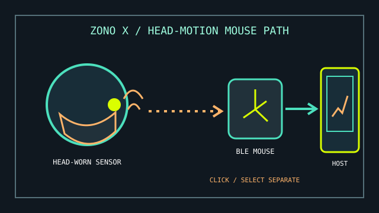

[ HEAD CONTROL // BLUETOOTH POINTER ]
Quha Zono X
A head-worn mouse that converts head movement into cursor movement through a Bluetooth mouse connection.

MODEL IDENTIFICATION: Quha Zono X. Record the worn attachment, firmware, paired host, and any separate click/selection device used with the unit.
Model specifications
| Catalog leaf | Adaptive and switch-access controls |
|---|---|
| Exact model / identifier | Quha Zono X head-worn Bluetooth mouse; wearing attachments and optional accessories may be supplied separately. |
| Mechanism and primary specifications | Head-motion sensing drives mouse-pointer movement; it pairs wirelessly with a compatible host, and device configuration is documented in the manufacturer manual. |
| Host interface and compatibility | Bluetooth Low Energy host that supports the required mouse input; Quha documents use across computer and mobile platforms, but OS features and pairing steps vary by host. |
| Revision identification | Record the Zono X model, firmware, Bluetooth host, wearing mount, and software or switch used for selection. |
Compatibility, setup & limitations
- Cursor movement does not automatically provide click, drag, text entry, or scanning. Configure OS dwell access, compatible dwell software, or a separate switch for those actions.
- Successful use requires stable, comfortable positioning and calibration for the user’s head movement; mounting and orientation changes may require setup again.
- Bluetooth mouse support does not mean every application or device exposes the same accessibility functions. Verify pairing and access features on the intended OS version before deployment.
- Battery charge and wireless pairing are part of the input path; keep a known wired or alternate access method available for setup and recovery where needed.
Preservation and service
Protect the wearable sensor and charging/connection accessories from impact and moisture. Keep the selected attachment with the device and note its fit position.
Record each host’s pairing identity and user-specific sensitivity/calibration before firmware or operating-system changes.
Manufacturer sources
- Quha — Zono X product informationManufacturer model description and current product information.
- Quha — Manuals and user guidesManufacturer-hosted user manual downloads, including Zono X documentation.